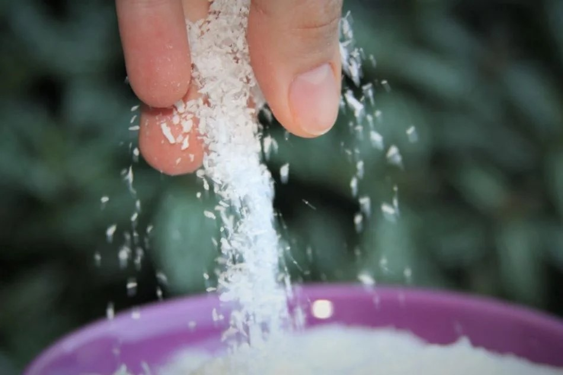
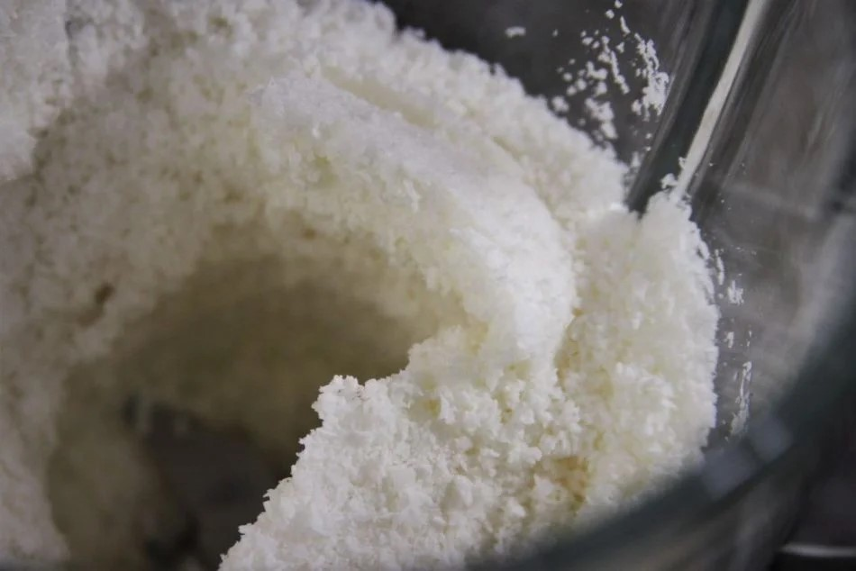
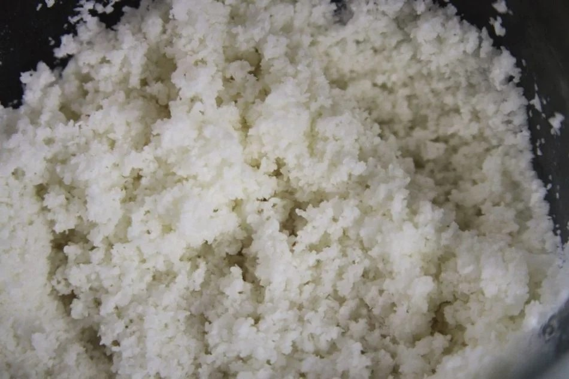
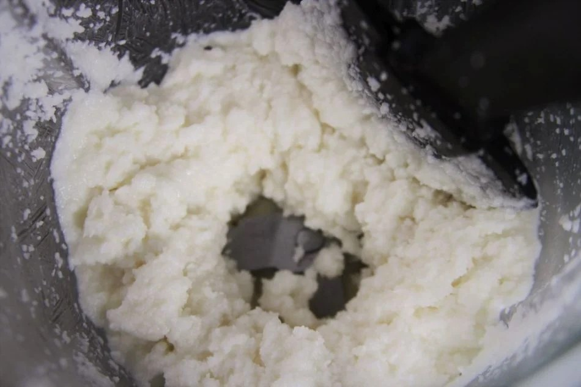
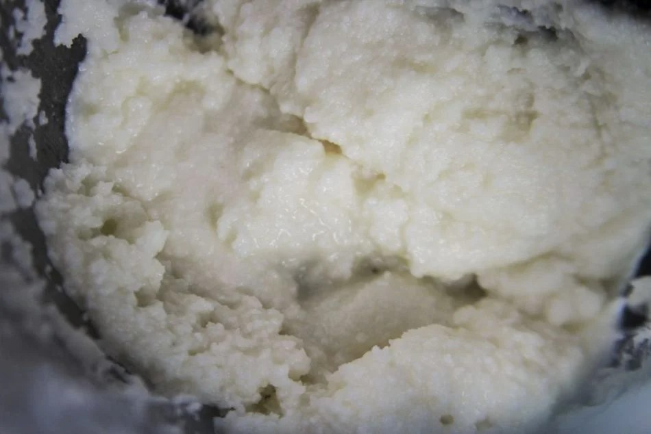
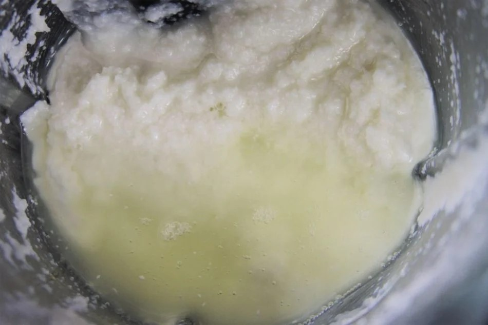
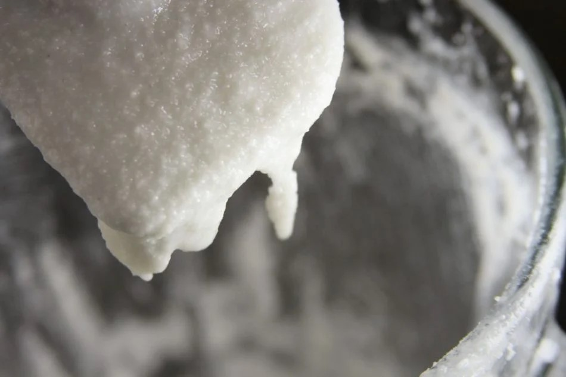
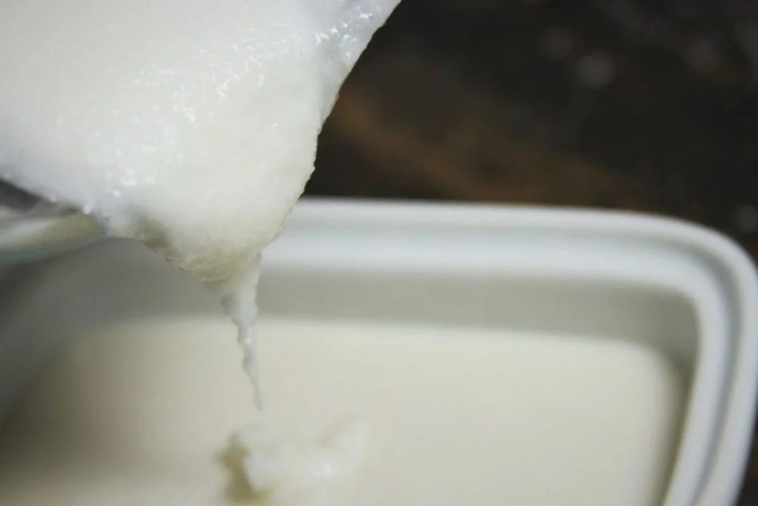
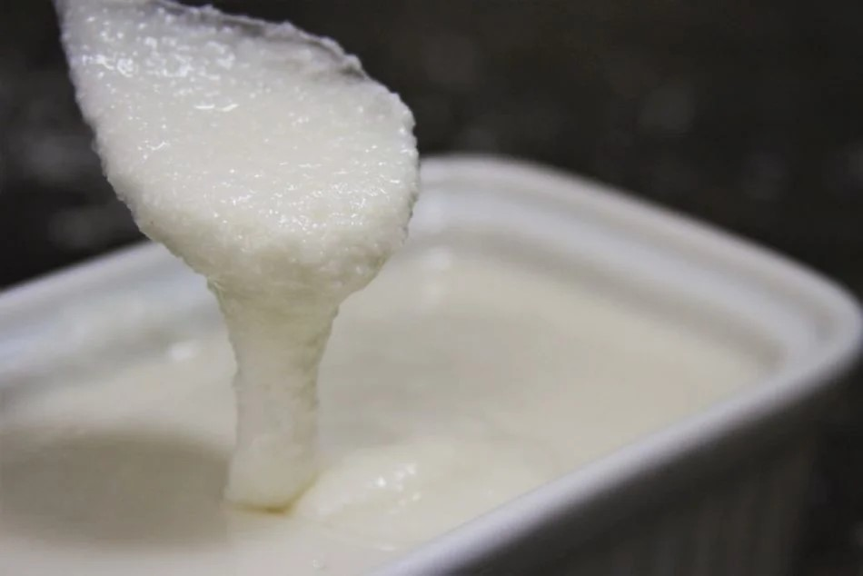
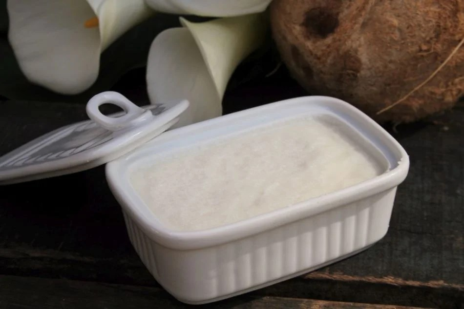

300 gramas de coco ralado seco ou desidratado integral – Atenção! Não pode ser úmido, adoçado, desengordurado ou parcialmente desengordurado
2 colheres de sopa de óleo de coco ou gordura de coco (opcional)

A manteiga de coco é feita com a polpa do coco, a “carne” branca que descola da casca e o óleo de coco é somente a gordura extraída desta mesma polpa.
A manteiga e o óleo de coco são brancos em sua forma sólida, mas o óleo de coco fica translúcido quando derretido, coisa que não acontece com a manteiga que fica sempre branquinha independente do estado que se encontra.
Em um liquidificador adicione o coco ralado e ligue em velocidade baixa, sempre mexendo com a espátula, empurrando o coco que fica nas laterais para o centro da lâmina.

No começo parece que não vai dar certo, porque ele demora mesmo pra mudar a aparência, mas depois de uns 10 minutos batendo você vai perceber que o óleo já está se soltando e a textura fica mais úmida.

Continue batendo e empurrando as laterais com uma espátula para que a lâmina consiga processar o coco.

Depois de aproximadamente 20 minutos processando o coco vai começar a virar uma pasta grossa e mais gordurosa. Você vai ver o brilho natural com facilidade.

Nesta etapa você pode continuar batendo até que a manteiga se torne quase líquida, mais uns 10-15 minutos, ou você pode agilizar o processo e adicionar 2 colheres de sopa de óleo de coco derretido.

Bata a manteiga mais uns 2 minutos até que o óleo de coco ajude a deixar na consistência esperada.

Agora é só transferir para um vidro ou recipiente que preferir e aproveitar para se deliciar.

A manteiga de coco fica cremosa, quase líquida assim que você acaba de fazer, mas conforme ela for esfriando (ela esquenta um pouco por causa da lâmina do liquidificador) ela vai ficar completamente sólida.

Perceba que quando a manteiga de coco esta solidificada ela lembra bastante o óleo de coco.

Você pode espalhá-la no pão, na panqueca ou no waffle neste no estado sólido, mas ela não é cremosa como a manteiga tradicional.
Você pode fazer manteiga de coco aromatizada, adicione um pouco de mel, melado, agave ou especiarias e deixe-a com um toque adocicado. Você também pode adicionar uma pitada de sal para realçar mais o sabor.
Para transformar em recheios de bombons, trufas ou biscoitos você pode adicionar frutas secas ou castanhas e processar no final quando sua manteiga já estiver na consistência desejada. Confira uma deliciosa receita de Biscoito com Manteiga de Coco:
Use no mínimo 200 gramas de coco ralado seco, se usar menor quantidade o liquidificador não vai conseguir processar a manteiga.
Pode parecer uma quantidade grande de coco, mas quando você transforma-o em manteiga ele fica mais compacto. Cada 100 gramas de coco rende 1/2 xícara de manteiga, portanto esta receita rende 1 xícara no total.
Não use o coco fresco pois a umidade natural do coco vai interferir na qualidade e na textura da manteiga.
Verifique sempre os ingredientes atrás da embalagem do coco e procure uma que diga apenas coco e no máximo um conservante. Algumas possuem mais de um conservante e mais alguns ingredientes estranhos para que o coco dure mais na prateleira. Para aprender a ler o rótulo dos produtos clique aqui!
Você não precisa guardar a manteiga de coco na geladeira, guarde apenas em um recipiente bem fechado (um vidro de preferência). Ela pode durar alguns meses na despensa, mas duvido que dure tanto tempo assim, pois ela é tão deliciosa que você vai querer consumir antes de ela querer começar a estragar.